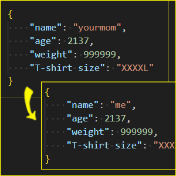
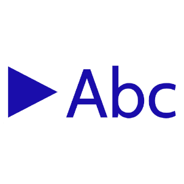
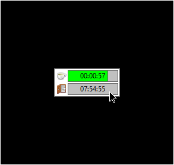

Kilka moich projektów
patchjson
Narzędzie do modyfikowania zawartości plików JSON bez wpływu na ich formatowanie.
Keyboard Navigator for Google Search™
Rozszerzenie do przeglądarki, które pozwala na nawigację wyników wyszukiwania Google za pomocą klawiatury.
another-day
Personalny strażnik czasu pracy oraz przerwy.
CodeMap
Edytor graficzny do tworzenia map kodu źródłowego.
Trex
Biblioteka C++ do renderowania czcionki, generowania atlasów i kształtowania tekstu.
LogAlligator
Bogata w funkcje aplikacje do przeglądania ogromnych plików z logami.
tinyevents
TinyEvents jest biblioteką nagłówkową w C++ do generycznego systemu Event-Dispatch.

Turtle 3D
Żółw znany z programu Logo, lecz tym razem w 3D. Wykorzystano czysty JavaScript i Canvas.

Puzzle
Układanka, w której obrazek jest podzielony na części. Mamy ułożyć go z powrotem.
The Damn Compiler
Kompilator języka imperatywnego, który kompiluje kod do abstrakcyjnego assemblera.
Zrozumieć Wektory*
Gra logiczno-zręcznościowa, w której gracz bawi się wektorami i obserwuje, jak wpływają one na zachowanie piłeczki.


pngsafe
Aplikacja ukrywająca plik w obrazie steganograficzną metodą modyfikacji najmniej znaczącego bitu.
EtherSim
Sandboxowy edytor topologii sieci komputerowej, w którym można symulować kolizje na łączu

Crypter
Konsolowa aplikacja do szyfrowania plików podanym przez użytkownika hasłem.
Plotter3D
Aplikacja webowa do rysowania wykresów 3D funkcji dwóch zmiennych.
* projekty realizowane w zespole